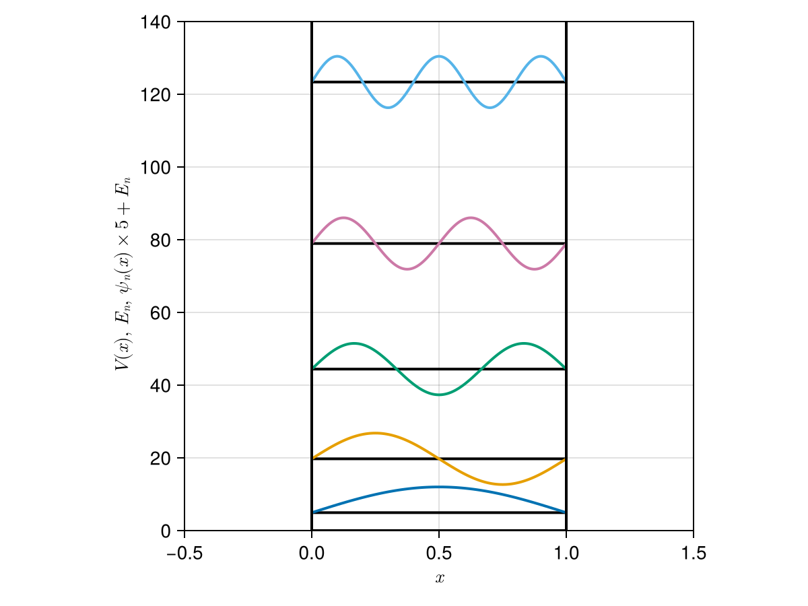

Infinite Potential Well (Particle in a Box)
The infinite potential well (particle in a box) is the simplest model for quantum mechanical system.
Definitions
This model is described with the time-independent Schrödinger equation
\[ \hat{H} \psi(x) = E \psi(x),\]
and the Hamiltonian
\[ \hat{H} = - \frac{\hbar^2}{2m} \frac{\mathrm{d}^2}{\mathrm{d}x ^2} + V(x).\]
Parameters are specified with the following struct.
Parameters
Antique.InfinitePotentialWell — TypeInfinitePotentialWell(L=1.0, m=1.0, ℏ=1.0)
$L$ is the length of the box, $m$ is the mass of particle and $\hbar$ is the reduced Planck constant (Dirac's constant).
Potential
Antique.V — MethodV(model::InfinitePotentialWell; x)
\[V(x) = \left\{ \begin{array}{ll} \infty & x \lt 0, L \lt x \\ 0 & 0 \leq x \leq L \end{array} \right.\]
Eigen Values
Antique.E — MethodE(model::InfinitePotentialWell; n=1)
\[E_n = \frac{\hbar^2 n^2 \pi^2}{2 m L^2}\]
Eigen Functions
Antique.ψ — Methodψ(model::InfinitePotentialWell, x; n=1)
\[\psi_n(x) = \sqrt{\frac{2}{L}} \sin \frac{n\pi x}{L}\]
Proofs
Usage & Examples
Install Antique.jl for the first use and run using Antique before each use. The energy E(), wavefunction ψ(), potential V() and some other functions are suppoted. In this system, the model is generated by InfinitePotentialWell and several parameters L, m and ℏ are set as optional arguments.
using Antique
IPW = InfinitePotentialWell(L=1.0, m=1.0, ℏ=1.0)Parameters:
julia> IPW.L1.0julia> IPW.m1.0julia> IPW.ℏ1.0
Eigen values:
julia> E(IPW, n=1)4.934802200544679julia> E(IPW, n=2)19.739208802178716
Wave functions:
using CairoMakie
# settings
f = Figure()
ax = Axis(f[1,1], xlabel=L"$x$", ylabel=L"$\psi(x)$")
# plot
w1 = lines!(ax, 0..1, x -> ψ(IPW, x, n=1))
w2 = lines!(ax, 0..1, x -> ψ(IPW, x, n=2))
w3 = lines!(ax, 0..1, x -> ψ(IPW, x, n=3))
w4 = lines!(ax, 0..1, x -> ψ(IPW, x, n=4))
w5 = lines!(ax, 0..1, x -> ψ(IPW, x, n=5))
# legend
axislegend(ax, [w1, w2, w3, w4, w5], [L"n=1", L"n=2", L"n=3", L"n=4", L"n=5"], position=:lb)
f
Potential energy curve, Energy levels, Wave functions:
using CairoMakie
# settings
f = Figure()
ax = Axis(f[1,1], xlabel=L"$x$", ylabel=L"$V(x),~E_n,~\psi_n(x) \times 5 + E_n$", aspect=1, limits=(-0.5,1.5,0,140))
# hidespines!(ax)
# hidedecorations!(ax)
# plot
for n in 1:5
# energy
lines!(ax, [0,IPW.L], fill(E(IPW,n=n),2), color=:black, linewidth=2)
# wave function
lines!(ax, 0..IPW.L, x -> E(IPW,n=n) + 5*ψ(IPW,x,n=n), linewidth=2)
end
#potential
lines!(ax, [0,0,IPW.L,IPW.L], [140,0,0,140], color=:black, linewidth=2)
f
Testing
Unit testing and Integration testing were done using numerical integration (QuadGK.jl). The test script is here.
Normalization & Orthogonality of $\psi_n(x)$
\[\int_{0}^{L} \psi_i^\ast(x) \psi_j(x) ~\mathrm{d}x = \delta_{ij}\]
i | j | analytical | numerical
-- | -- | ----------------- | -----------------
1 | 1 | 1.000000000000 | 1.000000000000 ✔
1 | 2 | 0.000000000000 | 0.000000000000 ✔
1 | 3 | 0.000000000000 | -0.000000000000 ✔
1 | 4 | 0.000000000000 | 0.000000000000 ✔
1 | 5 | 0.000000000000 | 0.000000000000 ✔
1 | 6 | 0.000000000000 | -0.000000000000 ✔
1 | 7 | 0.000000000000 | -0.000000000000 ✔
1 | 8 | 0.000000000000 | -0.000000000000 ✔
1 | 9 | 0.000000000000 | -0.000000000000 ✔
1 | 10 | 0.000000000000 | 0.000000000000 ✔
2 | 1 | 0.000000000000 | 0.000000000000 ✔
2 | 2 | 1.000000000000 | 1.000000000000 ✔
2 | 3 | 0.000000000000 | -0.000000000000 ✔
2 | 4 | 0.000000000000 | 0.000000000000 ✔
2 | 5 | 0.000000000000 | -0.000000000000 ✔
2 | 6 | 0.000000000000 | 0.000000000000 ✔
2 | 7 | 0.000000000000 | 0.000000000000 ✔
2 | 8 | 0.000000000000 | 0.000000000000 ✔
2 | 9 | 0.000000000000 | -0.000000000000 ✔
2 | 10 | 0.000000000000 | 0.000000000000 ✔
3 | 1 | 0.000000000000 | -0.000000000000 ✔
3 | 2 | 0.000000000000 | -0.000000000000 ✔
3 | 3 | 1.000000000000 | 1.000000000000 ✔
3 | 4 | 0.000000000000 | -0.000000000000 ✔
3 | 5 | 0.000000000000 | -0.000000000000 ✔
3 | 6 | 0.000000000000 | -0.000000000000 ✔
3 | 7 | 0.000000000000 | 0.000000000000 ✔
3 | 8 | 0.000000000000 | 0.000000000000 ✔
3 | 9 | 0.000000000000 | -0.000000000000 ✔
3 | 10 | 0.000000000000 | 0.000000000000 ✔
4 | 1 | 0.000000000000 | 0.000000000000 ✔
4 | 2 | 0.000000000000 | 0.000000000000 ✔
4 | 3 | 0.000000000000 | -0.000000000000 ✔
4 | 4 | 1.000000000000 | 1.000000000000 ✔
4 | 5 | 0.000000000000 | -0.000000000000 ✔
4 | 6 | 0.000000000000 | -0.000000000000 ✔
4 | 7 | 0.000000000000 | 0.000000000000 ✔
4 | 8 | 0.000000000000 | 0.000000000000 ✔
4 | 9 | 0.000000000000 | -0.000000000000 ✔
4 | 10 | 0.000000000000 | 0.000000000000 ✔
5 | 1 | 0.000000000000 | 0.000000000000 ✔
5 | 2 | 0.000000000000 | -0.000000000000 ✔
5 | 3 | 0.000000000000 | -0.000000000000 ✔
5 | 4 | 0.000000000000 | -0.000000000000 ✔
5 | 5 | 1.000000000000 | 1.000000000000 ✔
5 | 6 | 0.000000000000 | 0.000000000000 ✔
5 | 7 | 0.000000000000 | -0.000000000000 ✔
5 | 8 | 0.000000000000 | 0.000000000000 ✔
5 | 9 | 0.000000000000 | 0.000000000000 ✔
5 | 10 | 0.000000000000 | 0.000000000000 ✔
6 | 1 | 0.000000000000 | -0.000000000000 ✔
6 | 2 | 0.000000000000 | 0.000000000000 ✔
6 | 3 | 0.000000000000 | -0.000000000000 ✔
6 | 4 | 0.000000000000 | -0.000000000000 ✔
6 | 5 | 0.000000000000 | 0.000000000000 ✔
6 | 6 | 1.000000000000 | 1.000000000000 ✔
6 | 7 | 0.000000000000 | -0.000000000000 ✔
6 | 8 | 0.000000000000 | -0.000000000000 ✔
6 | 9 | 0.000000000000 | 0.000000000000 ✔
6 | 10 | 0.000000000000 | -0.000000000000 ✔
7 | 1 | 0.000000000000 | -0.000000000000 ✔
7 | 2 | 0.000000000000 | 0.000000000000 ✔
7 | 3 | 0.000000000000 | 0.000000000000 ✔
7 | 4 | 0.000000000000 | 0.000000000000 ✔
7 | 5 | 0.000000000000 | -0.000000000000 ✔
7 | 6 | 0.000000000000 | -0.000000000000 ✔
7 | 7 | 1.000000000000 | 1.000000000000 ✔
7 | 8 | 0.000000000000 | -0.000000000000 ✔
7 | 9 | 0.000000000000 | -0.000000000000 ✔
7 | 10 | 0.000000000000 | -0.000000000000 ✔
8 | 1 | 0.000000000000 | -0.000000000000 ✔
8 | 2 | 0.000000000000 | 0.000000000000 ✔
8 | 3 | 0.000000000000 | 0.000000000000 ✔
8 | 4 | 0.000000000000 | 0.000000000000 ✔
8 | 5 | 0.000000000000 | 0.000000000000 ✔
8 | 6 | 0.000000000000 | -0.000000000000 ✔
8 | 7 | 0.000000000000 | -0.000000000000 ✔
8 | 8 | 1.000000000000 | 1.000000000000 ✔
8 | 9 | 0.000000000000 | -0.000000000000 ✔
8 | 10 | 0.000000000000 | 0.000000000000 ✔
9 | 1 | 0.000000000000 | -0.000000000000 ✔
9 | 2 | 0.000000000000 | -0.000000000000 ✔
9 | 3 | 0.000000000000 | -0.000000000000 ✔
9 | 4 | 0.000000000000 | -0.000000000000 ✔
9 | 5 | 0.000000000000 | 0.000000000000 ✔
9 | 6 | 0.000000000000 | 0.000000000000 ✔
9 | 7 | 0.000000000000 | -0.000000000000 ✔
9 | 8 | 0.000000000000 | -0.000000000000 ✔
9 | 9 | 1.000000000000 | 1.000000000000 ✔
9 | 10 | 0.000000000000 | 0.000000000000 ✔
10 | 1 | 0.000000000000 | 0.000000000000 ✔
10 | 2 | 0.000000000000 | 0.000000000000 ✔
10 | 3 | 0.000000000000 | 0.000000000000 ✔
10 | 4 | 0.000000000000 | 0.000000000000 ✔
10 | 5 | 0.000000000000 | 0.000000000000 ✔
10 | 6 | 0.000000000000 | -0.000000000000 ✔
10 | 7 | 0.000000000000 | -0.000000000000 ✔
10 | 8 | 0.000000000000 | 0.000000000000 ✔
10 | 9 | 0.000000000000 | 0.000000000000 ✔
10 | 10 | 1.000000000000 | 1.000000000000 ✔Eigen Values
\[ \begin{aligned} E_n &= \int_0^L \psi^\ast_n(x) \hat{H} \psi_n(x) ~\mathrm{d}x \\ &= \int_0^L \psi^\ast_n(x) \left[ \hat{V} + \hat{T} \right] \psi(x) ~\mathrm{d}x \\ &= \int_0^L \psi^\ast_n(x) \left[ 0 - \frac{\hbar^2}{2m} \frac{\mathrm{d}^{2}}{\mathrm{d} x^{2}} \right] \psi(x) ~\mathrm{d}x \\ &\simeq \int_0^L \psi^\ast_n(x) \left[ -\frac{\hbar^2}{2m} \frac{\psi(x+\Delta x) - 2\psi(x) + \psi(x-\Delta x)}{\Delta x^{2}} \right] ~\mathrm{d}x. \end{aligned}\]
Where, the difference formula for the 2nd-order derivative:
\[\begin{aligned} % 2\psi(x) % + \frac{\mathrm{d}^{2} \psi(x)}{\mathrm{d} x^{2}} \Delta x^{2} % + O\left(\Delta x^{4}\right) % &= % \psi(x+\Delta x) % + \psi(x-\Delta x) % \\ % \frac{\mathrm{d}^{2} \psi(x)}{\mathrm{d} x^{2}} \Delta x^{2} % &= % \psi(x+\Delta x) % - 2\psi(x) % + \psi(x-\Delta x) % - O\left(\Delta x^{4}\right) % \\ % \frac{\mathrm{d}^{2} \psi(x)}{\mathrm{d} x^{2}} % &= % \frac{\psi(x+\Delta x) - 2\psi(x) + \psi(x-\Delta x)}{\Delta x^{2}} % - \frac{O\left(\Delta x^{4}\right)}{\Delta x^{2}} % \\ \frac{\mathrm{d}^{2} \psi(x)}{\mathrm{d} x^{2}} &= \frac{\psi(x+\Delta x) - 2\psi(x) + \psi(x-\Delta x)}{\Delta x^{2}} + O\left(\Delta x^{2}\right) \end{aligned}\]
are given by the sum of 2 Taylor series:
\[\begin{aligned} \psi(x+\Delta x) &= \psi(x) + \frac{\mathrm{d} \psi(x)}{\mathrm{d} x} \Delta x + \frac{1}{2!} \frac{\mathrm{d}^{2} \psi(x)}{\mathrm{d} x^{2}} \Delta x^{2} + \frac{1}{3!} \frac{\mathrm{d}^{3} \psi(x)}{\mathrm{d} x^{3}} \Delta x^{3} + O\left(\Delta x^{4}\right), \\ \psi(x-\Delta x) &= \psi(x) - \frac{\mathrm{d} \psi(x)}{\mathrm{d} x} \Delta x + \frac{1}{2!} \frac{\mathrm{d}^{2} \psi(x)}{\mathrm{d} x^{2}} \Delta x^{2} - \frac{1}{3!} \frac{\mathrm{d}^{3} \psi(x)}{\mathrm{d} x^{3}} \Delta x^{3} + O\left(\Delta x^{4}\right). \end{aligned}\]
L | m | ℏ | n | analytical | numerical
--- | --- | --- | -- | ----------------- | -----------------
0.1 | 0.1 | 0.1 | 1 | 49.348021579139 | 49.348022005447 ✔
0.1 | 0.1 | 0.1 | 2 | 197.392081461942 | 197.392088021787 ✔
0.1 | 0.1 | 0.1 | 3 | 444.132165131018 | 444.132198049021 ✔
0.1 | 0.1 | 0.1 | 4 | 789.568248175979 | 789.568352087149 ✔
0.1 | 0.1 | 0.1 | 5 | 1233.700296336187 | 1233.700550136170 ✔
0.1 | 0.1 | 0.1 | 6 | 1776.528266243334 | 1776.528792196084 ✔
0.1 | 0.1 | 0.1 | 7 | 2418.052103857080 | 2418.053078266893 ✔
0.1 | 0.1 | 0.1 | 8 | 3158.271745875927 | 3158.273408348594 ✔
0.1 | 0.1 | 0.1 | 9 | 3997.187119264267 | 3997.189782441189 ✔
0.1 | 0.1 | 0.1 | 10 | 4934.798141994514 | 4934.802200544678 ✔
0.1 | 0.1 | 1.0 | 1 | 4934.802157913905 | 4934.802200544678 ✔
0.1 | 0.1 | 1.0 | 2 | 19739.208146194214 | 19739.208802178713 ✔
0.1 | 0.1 | 1.0 | 3 | 44413.216513101754 | 44413.219804902103 ✔
0.1 | 0.1 | 1.0 | 4 | 78956.824817597895 | 78956.835208714852 ✔
0.1 | 0.1 | 1.0 | 5 | 123370.029633618717 | 123370.055013616948 ✔
0.1 | 0.1 | 1.0 | 6 | 177652.826624333364 | 177652.879219608410 ✔
0.1 | 0.1 | 1.0 | 7 | 241805.210385707964 | 241805.307826689212 ✔
0.1 | 0.1 | 1.0 | 8 | 315827.174587592541 | 315827.340834859409 ✔
0.1 | 0.1 | 1.0 | 9 | 399718.711926426622 | 399718.978244118916 ✔
0.1 | 0.1 | 1.0 | 10 | 493479.814199451241 | 493480.220054467791 ✔
0.1 | 1.0 | 0.1 | 1 | 4.934802157914 | 4.934802200545 ✔
0.1 | 1.0 | 0.1 | 2 | 19.739208146194 | 19.739208802179 ✔
0.1 | 1.0 | 0.1 | 3 | 44.413216513102 | 44.413219804902 ✔
0.1 | 1.0 | 0.1 | 4 | 78.956824817598 | 78.956835208715 ✔
0.1 | 1.0 | 0.1 | 5 | 123.370029633619 | 123.370055013617 ✔
0.1 | 1.0 | 0.1 | 6 | 177.652826624333 | 177.652879219608 ✔
0.1 | 1.0 | 0.1 | 7 | 241.805210385708 | 241.805307826689 ✔
0.1 | 1.0 | 0.1 | 8 | 315.827174587593 | 315.827340834859 ✔
0.1 | 1.0 | 0.1 | 9 | 399.718711926427 | 399.718978244119 ✔
0.1 | 1.0 | 0.1 | 10 | 493.479814199451 | 493.480220054468 ✔
0.1 | 1.0 | 1.0 | 1 | 493.480215791390 | 493.480220054468 ✔
0.1 | 1.0 | 1.0 | 2 | 1973.920814619422 | 1973.920880217871 ✔
0.1 | 1.0 | 1.0 | 3 | 4441.321651310176 | 4441.321980490210 ✔
0.1 | 1.0 | 1.0 | 4 | 7895.682481759791 | 7895.683520871485 ✔
0.1 | 1.0 | 1.0 | 5 | 12337.002963361872 | 12337.005501361695 ✔
0.1 | 1.0 | 1.0 | 6 | 17765.282662433339 | 17765.287921960840 ✔
0.1 | 1.0 | 1.0 | 7 | 24180.521038570794 | 24180.530782668924 ✔
0.1 | 1.0 | 1.0 | 8 | 31582.717458759253 | 31582.734083485939 ✔
0.1 | 1.0 | 1.0 | 9 | 39971.871192642662 | 39971.897824411892 ✔
0.1 | 1.0 | 1.0 | 10 | 49347.981419945128 | 49348.022005446779 ✔
1.0 | 0.1 | 0.1 | 1 | 0.493480215948 | 0.493480220054 ✔
1.0 | 0.1 | 0.1 | 2 | 1.973920815419 | 1.973920880218 ✔
1.0 | 0.1 | 0.1 | 3 | 4.441321651944 | 4.441321980490 ✔
1.0 | 0.1 | 0.1 | 4 | 7.895682481265 | 7.895683520871 ✔
1.0 | 0.1 | 0.1 | 5 | 12.337002965030 | 12.337005501362 ✔
1.0 | 0.1 | 0.1 | 6 | 17.765282661715 | 17.765287921961 ✔
1.0 | 0.1 | 0.1 | 7 | 24.180521036064 | 24.180530782669 ✔
1.0 | 0.1 | 0.1 | 8 | 31.582717460023 | 31.582734083486 ✔
1.0 | 0.1 | 0.1 | 9 | 39.971871195191 | 39.971897824412 ✔
1.0 | 0.1 | 0.1 | 10 | 49.347981417827 | 49.348022005447 ✔
1.0 | 0.1 | 1.0 | 1 | 49.348021594816 | 49.348022005447 ✔
1.0 | 0.1 | 1.0 | 2 | 197.392081541864 | 197.392088021787 ✔
1.0 | 0.1 | 1.0 | 3 | 444.132165194438 | 444.132198049021 ✔
1.0 | 0.1 | 1.0 | 4 | 789.568248126463 | 789.568352087149 ✔
1.0 | 0.1 | 1.0 | 5 | 1233.700296503016 | 1233.700550136170 ✔
1.0 | 0.1 | 1.0 | 6 | 1776.528266171473 | 1776.528792196084 ✔
1.0 | 0.1 | 1.0 | 7 | 2418.052103606433 | 2418.053078266892 ✔
1.0 | 0.1 | 1.0 | 8 | 3158.271746002275 | 3158.273408348594 ✔
1.0 | 0.1 | 1.0 | 9 | 3997.187119519121 | 3997.189782441190 ✔
1.0 | 0.1 | 1.0 | 10 | 4934.798141782662 | 4934.802200544679 ✔
1.0 | 1.0 | 0.1 | 1 | 0.049348021595 | 0.049348022005 ✔
1.0 | 1.0 | 0.1 | 2 | 0.197392081542 | 0.197392088022 ✔
1.0 | 1.0 | 0.1 | 3 | 0.444132165194 | 0.444132198049 ✔
1.0 | 1.0 | 0.1 | 4 | 0.789568248126 | 0.789568352087 ✔
1.0 | 1.0 | 0.1 | 5 | 1.233700296503 | 1.233700550136 ✔
1.0 | 1.0 | 0.1 | 6 | 1.776528266171 | 1.776528792196 ✔
1.0 | 1.0 | 0.1 | 7 | 2.418052103606 | 2.418053078267 ✔
1.0 | 1.0 | 0.1 | 8 | 3.158271746002 | 3.158273408349 ✔
1.0 | 1.0 | 0.1 | 9 | 3.997187119519 | 3.997189782441 ✔
1.0 | 1.0 | 0.1 | 10 | 4.934798141783 | 4.934802200545 ✔
1.0 | 1.0 | 1.0 | 1 | 4.934802159482 | 4.934802200545 ✔
1.0 | 1.0 | 1.0 | 2 | 19.739208154186 | 19.739208802179 ✔
1.0 | 1.0 | 1.0 | 3 | 44.413216519444 | 44.413219804902 ✔
1.0 | 1.0 | 1.0 | 4 | 78.956824812646 | 78.956835208715 ✔
1.0 | 1.0 | 1.0 | 5 | 123.370029650302 | 123.370055013617 ✔
1.0 | 1.0 | 1.0 | 6 | 177.652826617147 | 177.652879219608 ✔
1.0 | 1.0 | 1.0 | 7 | 241.805210360643 | 241.805307826689 ✔
1.0 | 1.0 | 1.0 | 8 | 315.827174600228 | 315.827340834859 ✔
1.0 | 1.0 | 1.0 | 9 | 399.718711951912 | 399.718978244119 ✔
1.0 | 1.0 | 1.0 | 10 | 493.479814178266 | 493.480220054468 ✔Expected Value of $x$
\[\langle x \rangle_{n=1} = \int_{0}^{L} \psi_1^\ast(x) \hat{x} \psi_1(x) ~\mathrm{d}x = \frac{2(2a)^2}{\pi^3} \left( \frac{\pi^3}{6} - \frac{\pi}{4} \right)\]
for only $n=1$.
Reference:
L | n | analytical | numerical
--- | -- | ----------------- | -----------------
0.1 | 1 | 0.050000000000 | 0.050000000000 ✔
0.5 | 1 | 0.250000000000 | 0.250000000000 ✔
1.0 | 1 | 0.500000000000 | 0.500000000000 ✔
7.0 | 1 | 3.500000000000 | 3.500000000000 ✔Expected Value of $x^2$
\[\langle x^2 \rangle_{n=1} = \int_{0}^{L} \psi_1^\ast(x) \hat{x}^2 \psi_1(x) ~\mathrm{d}x = \frac{2(2a)^2}{\pi^3} \left( \frac{\pi^3}{6} - \frac{\pi}{4} \right)\]
Reference:
L | n | analytical | numerical
--- | -- | ----------------- | -----------------
0.1 | 1 | 0.002826727415 | 0.002826727415 ✔
0.5 | 1 | 0.070668185378 | 0.070668185378 ✔
1.0 | 1 | 0.282672741512 | 0.282672741512 ✔
7.0 | 1 | 13.850964334096 | 13.850964334096 ✔Expected Value of $p$
\[\langle p \rangle_{n=1} = \int_{0}^{L} \psi_1^\ast(x) \hat{p} \psi_1(x) ~\mathrm{d}x = 0\]
Reference:
\[ \begin{aligned} \langle p \rangle_{n=1} &= \int_0^L \psi^\ast_n(x) \hat{p} \psi_n(x) ~\mathrm{d}x \\ &= \int_0^L \psi^\ast_n(x) \left[ -i\hbar\frac{\mathrm{d}}{\mathrm{d} x} \right] \psi(x) ~\mathrm{d}x \\ &\simeq \int_0^L \psi^\ast_n(x) \left[ -i\hbar \frac{\psi(x+\Delta x) - \psi(x-\Delta x)}{2\Delta x} \right] ~\mathrm{d}x. \end{aligned}\]
Where, the difference formula for the 2nd-order derivative:
\[\begin{aligned} % 2\frac{\mathrm{d} \psi(x)}{\mathrm{d}x} \Delta x % + O\left(\Delta x^{3}\right) % &= % \psi(x+\Delta x) % - \psi(x-\Delta x) % \\ % 2\frac{\mathrm{d} \psi(x)}{\mathrm{d}x} \Delta x % &= % \psi(x+\Delta x) % - \psi(x-\Delta x) % - O\left(\Delta x^{3}\right) % \\ % \frac{\mathrm{d} \psi(x)}{\mathrm{d}x} % &= % \frac{\psi(x+\Delta x)- \psi(x-\Delta x)}{2\Delta x} % - \frac{O\left(\Delta x^{3}\right)}{2\Delta x} % \\ \frac{\mathrm{d} \psi(x)}{\mathrm{d}x} &= \frac{\psi(x+\Delta x)- \psi(x-\Delta x)}{2\Delta x} + O\left(\Delta x^{2}\right), \end{aligned}\]
are given by the sum of 2 Taylor series:
\[\begin{aligned} \psi(x+\Delta x) &= \psi(x) + \frac{\mathrm{d} \psi(x)}{\mathrm{d}x} \Delta x + \frac{1}{2!} \frac{\mathrm{d}^{2} \psi(x)}{\mathrm{d}x^{2}} \Delta x^{2} + O\left(\Delta x^{3}\right), \\ \psi(x-\Delta x) &= \psi(x) - \frac{\mathrm{d} \psi(x)}{\mathrm{d}x} \Delta x + \frac{1}{2!} \frac{\mathrm{d}^{2} \psi(x)}{\mathrm{d}x^{2}} \Delta x^{2} + O\left(\Delta x^{3}\right). \end{aligned}\]
L | n | analytical | numerical
--- | -- | ----------------- | -----------------
0.1 | 1 | 0.000000000003 | 0.000000000000 ✔
0.5 | 1 | 0.000000000000 | 0.000000000000 ✔
1.0 | 1 | 0.000000000000 | 0.000000000000 ✔
7.0 | 1 | 0.000000000000 | 0.000000000000 ✔Expected Value of $p^2$
\[\langle p^2 \rangle = \int_{0}^{L} \psi_1^\ast(x) \hat{p}^2 \psi_1(x) ~\mathrm{d}x = \frac{\pi^2\hbar^2}{L^2}\]
Reference:
\[ \begin{aligned} \langle p^2 \rangle &= \int_0^L \psi^\ast_n(x) \hat{p} \psi_n(x) ~\mathrm{d}x \\ &= \int_0^L \psi^\ast_n(x) \left[ -\hbar^2\frac{\mathrm{d}^2}{{\mathrm{d}x}^2} \right] \psi(x) ~\mathrm{d}x \\ &\simeq \int_0^L \psi^\ast_n(x) \left[ -\hbar^2 \frac{\psi(x+\Delta x) - 2\psi(x) + \psi(x-\Delta x)}{\Delta x^{2}} \right] ~\mathrm{d}x. \end{aligned}\]
Where, the difference formula for the 2nd-order derivative:
\[\begin{aligned} % 2\psi(x) % + \frac{\mathrm{d}^{2} \psi(x)}{\mathrm{d} x^{2}} \Delta x^{2} % + O\left(\Delta x^{4}\right) % &= % \psi(x+\Delta x) % + \psi(x-\Delta x) % \\ % \frac{\mathrm{d}^{2} \psi(x)}{\mathrm{d} x^{2}} \Delta x^{2} % &= % \psi(x+\Delta x) % - 2\psi(x) % + \psi(x-\Delta x) % - O\left(\Delta x^{4}\right) % \\ % \frac{\mathrm{d}^{2} \psi(x)}{\mathrm{d} x^{2}} % &= % \frac{\psi(x+\Delta x) - 2\psi(x) + \psi(x-\Delta x)}{\Delta x^{2}} % - \frac{O\left(\Delta x^{4}\right)}{\Delta x^{2}} % \\ \frac{\mathrm{d}^{2} \psi(x)}{\mathrm{d} x^{2}} &= \frac{\psi(x+\Delta x) - 2\psi(x) + \psi(x-\Delta x)}{\Delta x^{2}} + O\left(\Delta x^{2}\right) \end{aligned}\]
are given by the sum of 2 Taylor series:
\[\begin{aligned} \psi(x+\Delta x) &= \psi(x) + \frac{\mathrm{d} \psi(x)}{\mathrm{d} x} \Delta x + \frac{1}{2!} \frac{\mathrm{d}^{2} \psi(x)}{\mathrm{d} x^{2}} \Delta x^{2} + \frac{1}{3!} \frac{\mathrm{d}^{3} \psi(x)}{\mathrm{d} x^{3}} \Delta x^{3} + O\left(\Delta x^{4}\right), \\ \psi(x-\Delta x) &= \psi(x) - \frac{\mathrm{d} \psi(x)}{\mathrm{d} x} \Delta x + \frac{1}{2!} \frac{\mathrm{d}^{2} \psi(x)}{\mathrm{d} x^{2}} \Delta x^{2} - \frac{1}{3!} \frac{\mathrm{d}^{3} \psi(x)}{\mathrm{d} x^{3}} \Delta x^{3} + O\left(\Delta x^{4}\right). \end{aligned}\]
L | n | analytical | numerical
--- | -- | ----------------- | -----------------
0.1 | 1 | 986.960431582781 | 986.960440108936 ✔
0.5 | 1 | 39.478417274195 | 39.478417604357 ✔
1.0 | 1 | 9.869604318963 | 9.869604401089 ✔
7.0 | 1 | 0.201420496383 | 0.201420497981 ✔